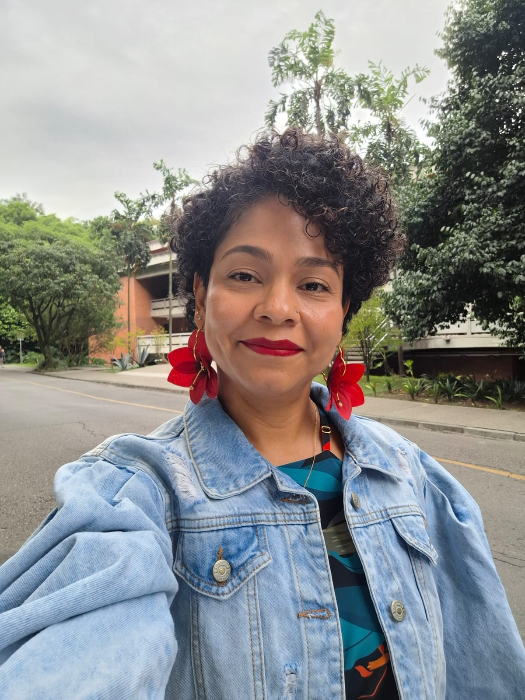
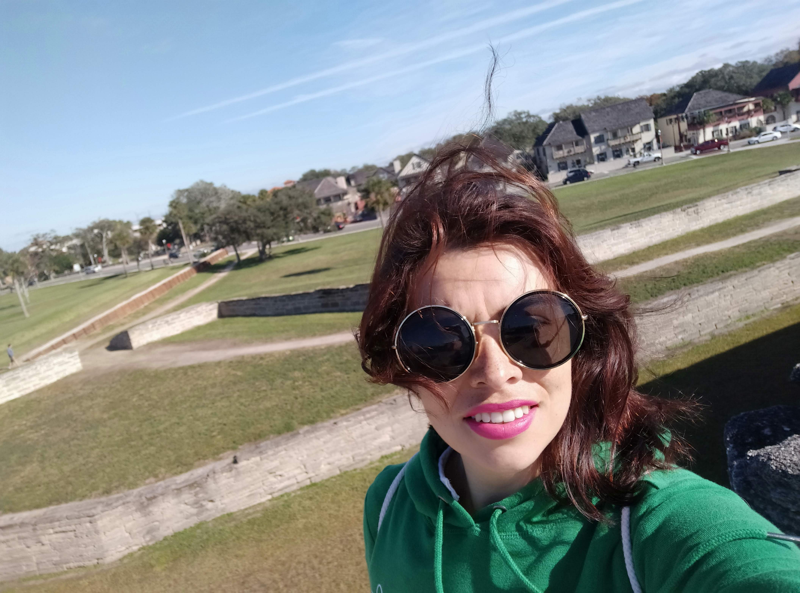
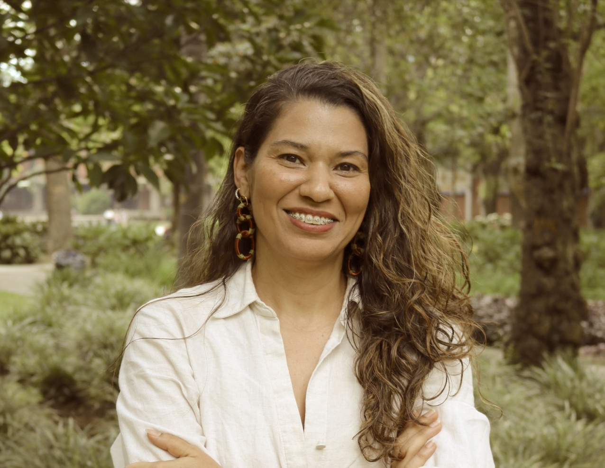

Desde este enfoque, promovemos el diálogo, la reflexión crítica y el acompañamiento respetuoso frente a experiencias, problemáticas y propuestas relacionadas con género y violencias basadas en género (VBG). Trabajamos en el desarrollo de proyectos, estrategias e iniciativas con enfoque de género y VBG, orientadas a la sensibilización, la formación y la transformación de prácticas institucionales y educativas. Asimismo, impulsamos acciones que fortalezcan la participación, permanencia y visibilidad de las mujeres en áreas STEM, reconociendo las brechas históricas y los desafíos estructurales que aún persisten en estos campos. Más que un grupo de trabajo, somos una red de apoyo, análisis y acción que busca aportar a la equidad, la sororidad y la generación de oportunidades para las mujeres y diversidades, especialmente en escenarios de formación, investigación e innovación.
ContáctanosEl TEAM Género + 💜 es una iniciativa orientada a la promoción de la equidad de género, la prevención de las violencias basadas en género y el fortalecimiento de la participación femenina en áreas STEM. Su propósito es generar espacios de escucha, análisis, formación e incidencia que contribuyan al desarrollo de prácticas más inclusivas en escenarios académicos, científicos y sociales. A través de su trayectoria, el grupo ha venido consolidando acciones y proyectos con enfoque de género que articulan investigación, sensibilización y acompañamiento, aportando al desarrollo académico, social y humano desde una perspectiva crítica y transformadora.
También puedes incluir información como año de creación, categoría, semilleros asociados, redes de trabajo y alianzas nacionales o internacionales.
Analizamos las dinámicas, manifestaciones e impactos de las violencias basadas en género en distintos contextos, especialmente en escenarios educativos y académicos. Esta línea busca aportar a la prevención, sensibilización y transformación de prácticas que reproducen desigualdad y exclusión..
Promovemos la visibilidad, participación, permanencia y fortalecimiento de las mujeres en ciencia, tecnología, ingeniería y matemáticas. Esta línea reconoce las brechas históricas en estos campos y trabaja por generar estrategias que impulsen la equidad, el reconocimiento y las oportunidades para las mujeres.
Desarrollamos iniciativas, proyectos y espacios pedagógicos orientados a la formación en enfoque de género, la reflexión crítica y la construcción de comunidades más conscientes e incluyentes. Esta línea busca convertir el conocimiento en acciones concretas con impacto institucional, académico y social.
El proyecto Impacto de la violencia basada en género en las áreas STEM analiza cómo las violencias basadas en género afectan la participación, permanencia y bienestar de las mujeres en estos campos, con el fin de visibilizar esta problemática y promover entornos académicos más seguros, equitativos e incluyentes.
Ciclo de charlas dirigido a niñas y jóvenes de colegio para inspirar su interés por la ciencia, visibilizar referentes femeninos y promover una mayor participación de las mujeres en áreas STEM.
Iniciativa de formación y sensibilización para docentes de colegios sobre violencias basadas en género, enfoque y perspectiva de género, con el fin de promover prácticas educativas más inclusivas, críticas y comprometidas con la equidad

Haz clic en la foto para ver sus intereses
Sus intereses se centran en los ambientes inteligentes, la ingeniería con perspectiva de género, la docencia universitaria y la promoción del talento femenino en áreas STEM. Además, disfruta del deporte, la lectura, el buen café y un buen vino.

Haz clic en la foto para ver sus intereses
Sus intereses incluyen las matemáticas, la investigación, el análisis de datos, la innovación educativa, el enfoque de género, los derechos humanos, la prevención de las violencias basadas en género y la transformación de los entornos STEM. También encuentra inspiración en el deporte, la buena comida y la montaña.

Haz clic en la foto para ver sus intereses
Sus intereses están en innovación, mejoramiento continuo, emprendimiento, educación, desarrollo territorial e investigación sobre el impacto de las VBG en la academia y en las trayectorias de mujeres en STEM. Cree profundamente en las redes de mujeres que se apoyan, aprenden juntas y abren camino para las que vienen.
Consulta la cartilla desarrollada por el grupo.
Ver cartillaAccede al artículo presentado en ACOFI.
Ver artículoEn este espacio encontrarás el banco de fotografías organizado por eventos, encuentros y actividades desarrolladas por el equipo.
Aquí encontrarás noticias, publicaciones y menciones en medios sobre nuestro trabajo.
Explora el tablero interactivo con los resultados del proyecto sobre violencias basadas en género en áreas STEM.
Haz clic en el botón para abrir el tablero de resultados en una nueva pestaña.
Ver tablero completoSíguenos en: @profas_stem
Ver InstagramMelisa Barrera: melisa.barrera@udea.edu.co
Adriana Fonce: amafeca@gmail.com
Carolina Mesa: lcarolina.mesa@udea.edu.co
Ubicación: Colombia